AxisGuide
*Equal contribution · †Co-corresponding authors

Abstract
Visuomotor manipulation policies trained via large-scale behavior cloning have achieved strong semantic scene understanding, yet often fail to reliably execute correct low-level actions under distribution shifts. We argue that this gap arises from insufficient action understanding: the inability to interpret the robot's base-frame action coordinate system in image space.
AxisGuide is a lightweight guidance method that renders the robot base-frame axes in each camera view and augments RGB observations with cue channels that explicitly visualize the meaning of +x, +y, and +z motions. Across LIBERO simulation and real-world experiments, AxisGuide improves task success and robustness under distribution shift.
Motivation
Current visuomotor policies often understand what to do, but struggle with how to execute the correct low-level action. In robot manipulation, actions are usually defined in the robot base frame, while observations are RGB images. Without an explicit visual reference, the policy must infer how base-frame motions such as +x, +y, and +z appear in the image.
Conventional Policy
Learns image-to-action correspondences implicitly and can fail when the target object moves to unseen locations.
AxisGuide
Provides explicit image-space cues for the robot action coordinate system, improving action grounding and generalization.
Method Overview

Given camera intrinsics, extrinsics, and the end-effector pose, AxisGuide projects unit robot base-frame translations onto the image plane. The projected +x, +y, and +z directions are rendered as cue channels and concatenated with RGB observations. This keeps the original RGB image intact while giving the policy a clean visual reference for action-coordinate semantics.
Key Results
AxisGuide improves success from 52.38% to 65.71% in simulation.
AxisGuide improves success from 30.12% to 50.00% on the Pick Up (Pear) task.
AxisGuide adds only about 0.005 seconds of latency per inference on SmolVLA.
Supplementary Videos
The videos follow the supplementary presentation order: unseen-location generalization first, then real-world manipulation tasks, and finally LIBERO simulation rollouts. Across these settings, AxisGuide helps the policy ground base-frame action directions directly in RGB observations.
Novel Object Locations in Simulation
Models trained with AxisGuide reliably reach object positions between training clusters, suggesting that explicit coordinate cues help the policy adjust end-effector motion under distribution shift.
Rollout 1
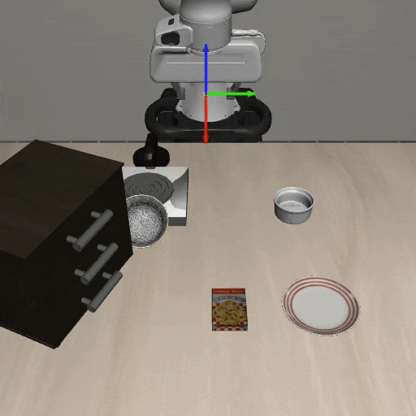
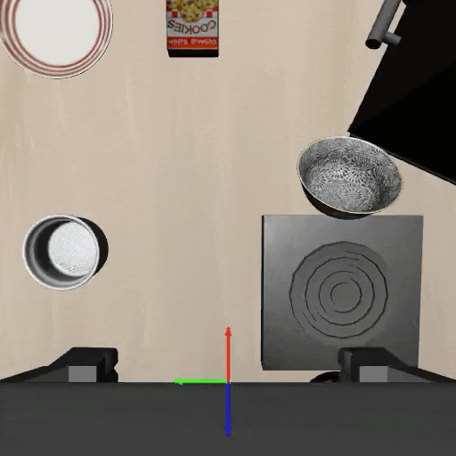
Rollout 2
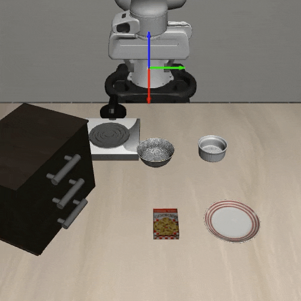
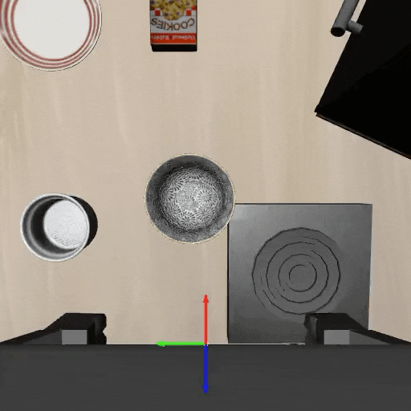
Rollout 3
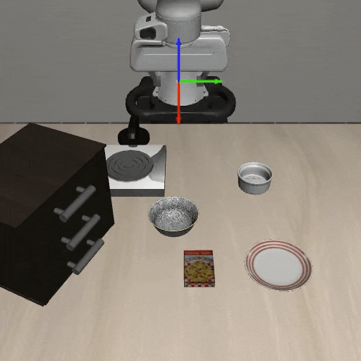
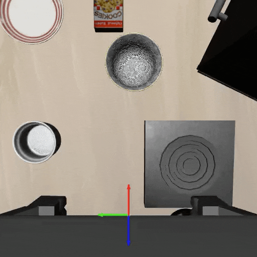
Rollout 4
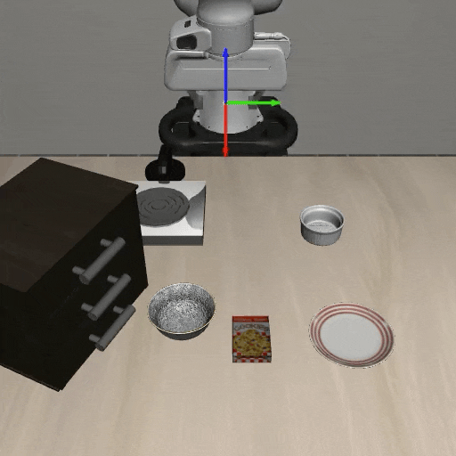
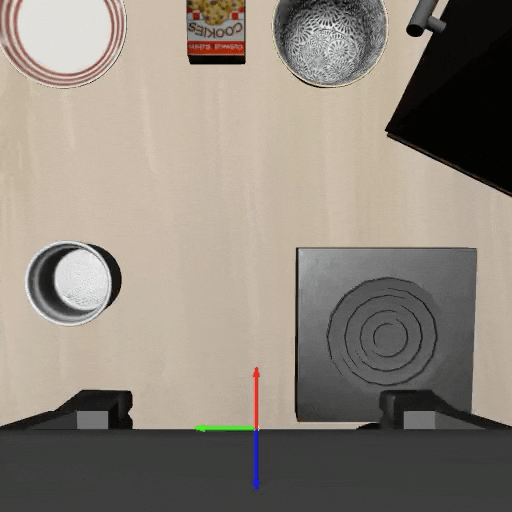
Novel Object Locations in the Real World
In the same experimental setup, explicit coordinate grounding improves task success under unseen real-world object locations. Wrist-view clips are shown alongside the front camera because multi-view control benefits from consistent action-coordinate cues across views.
Baseline 1
Baseline 2
AxisGuide 1
AxisGuide 2
Real-World Manipulation Tasks
With 50 demonstrations per task, AxisGuide supports reliable execution across diverse behaviors including closing a pot, flipping a pot, and pick-and-place manipulation.
Close Pot
Flip Pot
Pick & Place Grape
LIBERO Simulation Task Rollouts
In LIBERO simulation, AxisGuide is evaluated with Diffusion Policy and SmolVLA across spatial, object, goal, and long-horizon tasks. The rollouts below show representative front and wrist views.
Pick Bowl and Place on Plate
-ours.gif)
-ours-wrist.gif)
Put Both Objects in Basket
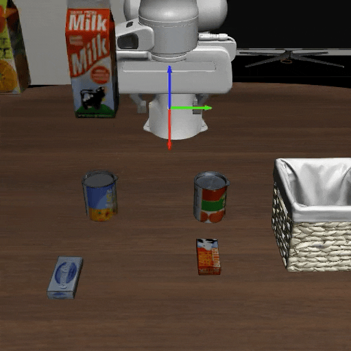
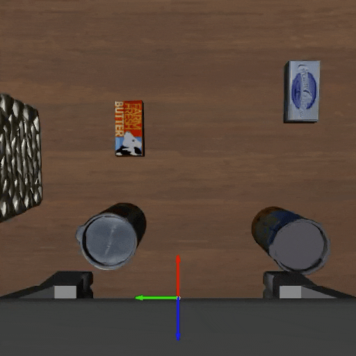
Turn On Stove and Place Moka Pot
-ours.gif)
-ours-wrist.gif)
LIBERO Spatial 1
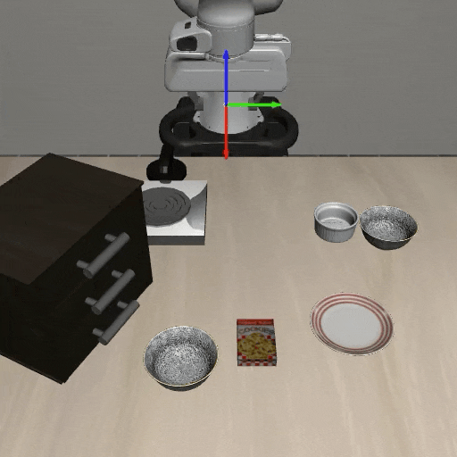
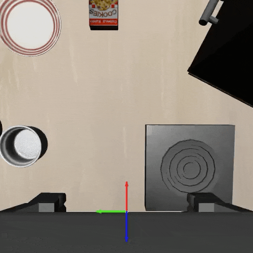
LIBERO Spatial 2
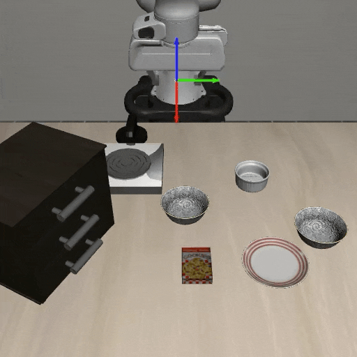
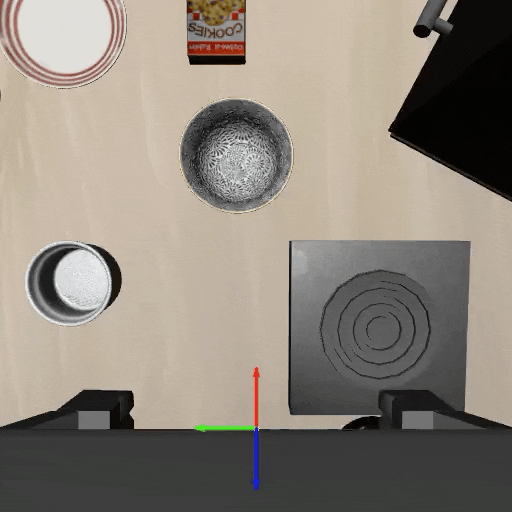
LIBERO Object 1
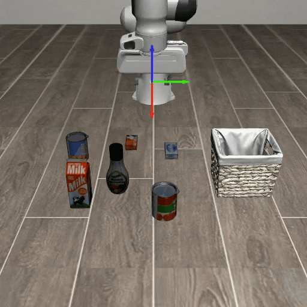
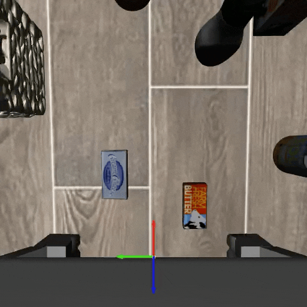
LIBERO Object 2
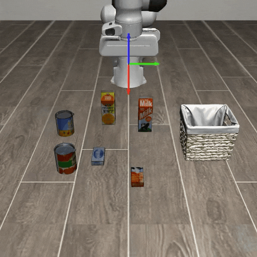
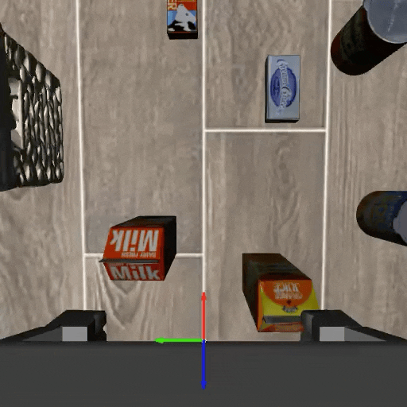
Comparison with Visual Cue Baselines
Existing visual cue methods provide spatial or temporal guidance, but they do not explicitly represent the robot action coordinate system. AxisGuide directly shows where the x, y, and z action directions lie in the image, enabling the policy to infer how to move toward a target under novel object positions.
52.38%
51.90%
52.38%
65.71%
BibTeX
@inproceedings{jang2026axisguide,
title = {AxisGuide: Grounding Robot Action Coordinate System in RGB Observations for Robust Visuomotor Manipulation},
author = {Jang, Jiyun and Sung, Yujin and Joung, Woosung and Chae, Daewon and Lee, Sangwon and Kim, Sohwi and Kim, Jinkyu and Lee, Jungbeom},
booktitle = {Robotics: Science and Systems},
year = {2026}
}